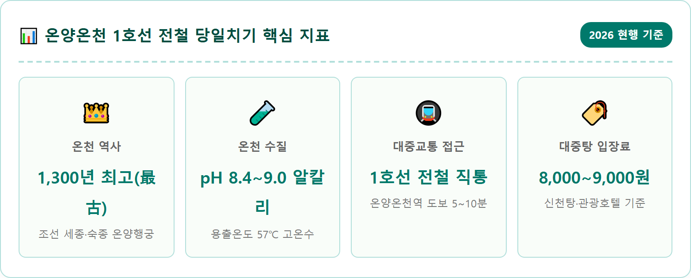
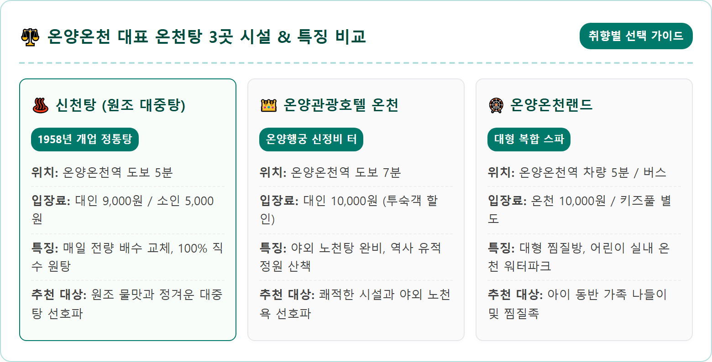
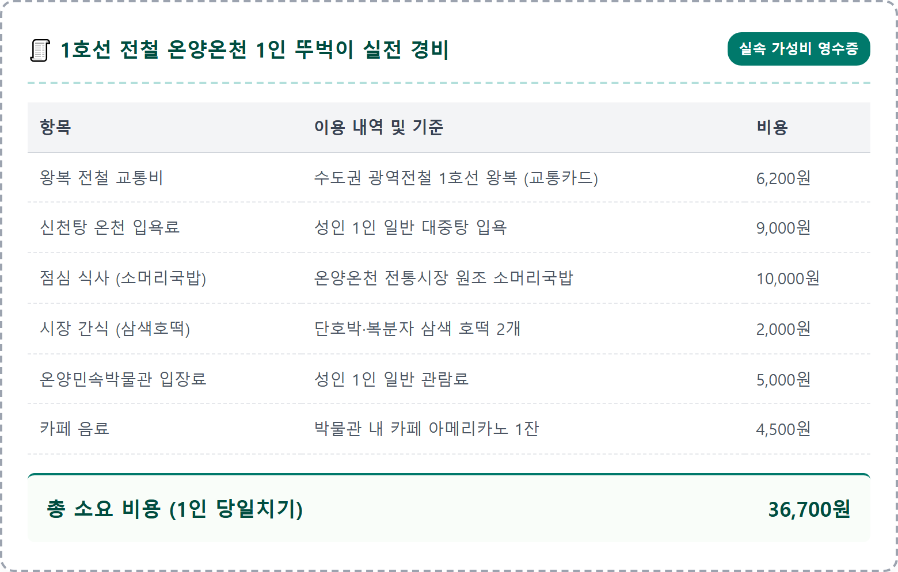
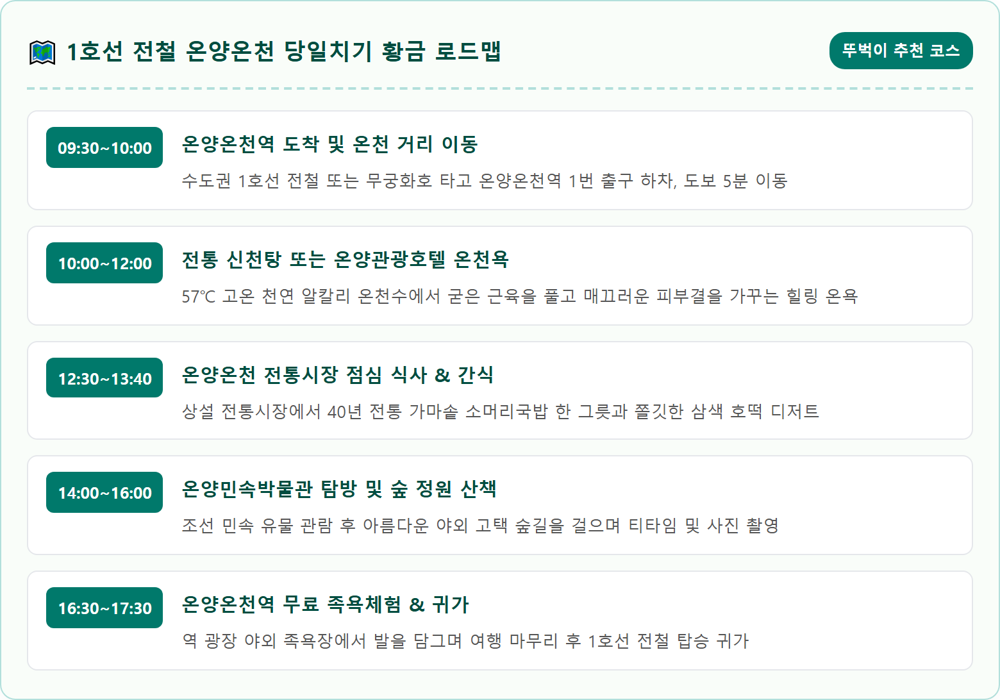
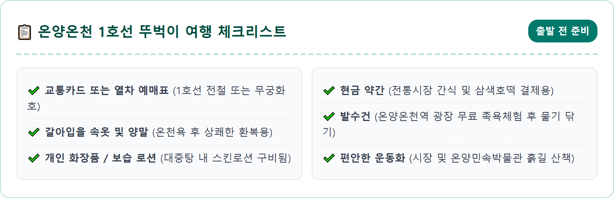
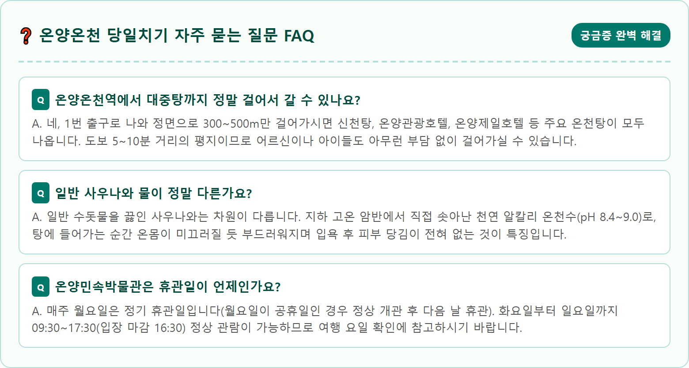

A photorealistic late autumn street and landscape scene of Onyang Hot Spring area in Asan, South Korea. In the foreground, steam gently rises from an authentic traditional Korean public hot spring bathhouse with classic tiled architecture and modern retro signage. Behind it, mature autumn trees display golden yellow and crimson foliage. Visitors walk comfortably in warm casual autumn coats along clean sidewalks lined with cozy market eateries. Clear, crisp blue autumn sky, bright gentle sunlight casting long soft shadows, 8k resolution, ultra-detailed documentary photography style, 1:1 aspect ratio.

대한민국에서 가장 오래된 온천의 역사를 간직한 곳, 바로 충청남도 아산의 '온양온천'입니다. 삼국사기와 백제본기에 '탕정군(湯井郡)'이라는 지명으로 기록된 이래 무려 1,300여 년의 장구한 세월 동안 한 번도 마르지 않고 뜨거운 생명수를 뿜어내고 있는 유서 깊은 온천의 본고장입니다.
특히 조선 시대에 이르러 온양온천은 왕실의 각별한 사랑을 받는 최고의 국립 휴양지로 전성기를 누렸습니다. 세종대왕은 눈병과 다리 통증을 치료하기 위해 이곳에 행궁(임금이 거처하는 임시 궁궐)을 짓고 장기간 머물렀으며, 세조, 현종, 숙종, 영조, 정조에 이르기까지 수많은 역대 임금들이 온양행궁을 찾아 정사를 돌보고 온천욕으로 피로를 다스렸습니다.
왕이 직접 몸을 담그며 건강을 회복했던 그 역사적 온천수가 오늘날에도 도심 지하 암반에서 콸콸 솟구쳐 나와 우리를 맞이합니다. 현대적인 고층 건물과 아파트 숲 사이에 수십 년 역사를 지닌 유서 깊은 대중탕들이 고스란히 보존되어 있어, 옛 시절의 정겨운 향수와 왕실의 품격을 동시에 느낄 수 있는 독보적인 명소입니다.
온양온천이 여타 온천 관광지와 비교해 압도적인 경쟁력을 자랑하는 가장 큰 이유는 바로 '환상적인 대중교통 접근성'입니다. 수도권 광역전철 1호선(신창행)을 탑승하면 서울역이나 용산역, 영등포역, 수원역 등 주요 환승역에서 갈아탈 필요 없이 단번에 '온양온천역' 플랫폼에 내릴 수 있습니다.
주말 고속도로의 극심한 교통 체증이나 주차 전쟁, 장거리 운전 피로에 시달릴 필요가 전혀 없습니다. 온양온천역 1번 출구로 나와 횡단보도를 하나만 건너면, 불과 300~500m 반경 안에 60년 전통의 신천탕을 비롯해 온양관광호텔, 온양제일호텔 등 유서 깊은 온천 명소들이 밀집해 있는 '온천동 온천 거리'가 눈앞에 펼쳐집니다.
배차 간격이 촘촘한 일반 전철 외에도 서울역이나 용산역에서 무궁화호나 ITX-새마을, ITX-마음을 타면 온양온천역까지 1시간 10~20분 만에 주파할 수 있습니다. 지갑 가볍게 교통카드 한 장과 갈아입을 옷가지만 챙겨 들고 훌쩍 떠나는 당일치기 기차 여행으로 이보다 완벽한 코스는 찾기 힘듭니다.

온양온천의 원천수는 지하 100~150m 암반 균열대에서 자분(自噴)하거나 양수되는 수온 57℃ 내외의 고온 온천수입니다. 수질은 실리카(규산) 성분이 풍부하게 함유된 마일드한 천연 알칼리성 단순천(pH 8.4~9.0)으로 분류됩니다.
알칼리성 온천수는 물 분자가 미세하여 피부 침투력이 우수하며, 피부 표면의 불필요한 유분과 노폐물을 자극 없이 씻어내는 천연 비누 역할을 합니다. 탕에 몸을 담그고 피부를 살살 문질러보면 미끌미끌하면서도 부드러운 감촉이 손끝에 고스란히 전해지며, 탕에서 나와 수건으로 물기만 닦아내도 하루 종일 로션을 바르지 않은 것처럼 살결이 매끄럽고 윤택해집니다.
또한 라듐과 중탄산나트륨, 마그네슘 이온이 적절히 조화를 이루고 있어 혈관 확장과 혈류량 증가를 유도하여 신경통, 만성 관절염, 근육통, 동맥경화 예방에 탁월한 효능을 발휘합니다. 조선왕조실록에 기록된 바와 같이, 세종대왕이 고질적인 안질과 피부병을 치료하고 세조가 피부 질환을 완치했던 역사적 배경에는 이 알칼리 온천수의 뛰어난 항염·재생 효과가 과학적으로 자리 잡고 있습니다.
온양온천 거리에는 각기 다른 개성과 역사를 뽐내는 온천 시설들이 밀집해 있어 취향과 동행인에 맞춰 선택하는 재미가 쏠쏠합니다. 가장 먼저 손꼽히는 곳은 1958년 문을 연 이래 온양온천의 상징으로 자리매김한 '신천탕(新泉湯)'입니다. 현대식 5층 건물로 깔끔하게 리모델링되었지만, 매일 영업 종료 후 탕의 온천수를 전량 배수하고 철저히 청소한 뒤 신선한 새 원탕을 채우는 엄격한 수질 관리 철학으로 온천 마니아들의 절대적인 신뢰를 받고 있습니다.
조선 시대 온양행궁의 정통 터에 자리 잡은 '온양관광호텔 온천'은 고풍스러운 품격을 자랑합니다. 이곳의 대욕장에는 유리 통창 너머로 시원한 바깥 공기를 쐴 수 있는 야외 노천탕이 갖추어져 있어 도심 속에서 색다른 노천욕의 정취를 만끽할 수 있습니다. 온천욕을 마친 후 호텔 뒤편 정원에 보존된 세종대왕의 온궁 옛터와 사도세자가 활을 쏘던 '영괴대', 그리고 온천수가 솟아오르는 기쁨을 기린 '신정비(神井碑)' 등 역사 유적을 둘러보는 묘미도 각별합니다.
어린 자녀와 함께하는 가족 여행객이라면 온양온천역에서 택시로 5분 거리인 '온양온천랜드'가 제격입니다. 대형 온천 대욕장뿐만 아니라 사계절 따뜻한 온천수로 채워진 어린이 실내 워터파크와 아늑한 찜질방, 대규모 키즈카페 시설이 완비되어 있어 온 가족이 하루 종일 지루할 틈 없이 온천 휴양을 즐길 수 있습니다.

온양온천의 대중탕들은 지역 주민들의 생활 터전이자 전국 각지에서 찾아오는 단골들의 쉼터인 만큼, 아침 일찍부터 문을 열어 하루를 상쾌하게 시작할 수 있습니다. 신천탕의 경우 새벽 05:00부터 밤 22:00까지(입장 마감 21:00) 연중무휴로 운영되며, 이용 요금은 성인 9,000원, 소인(생후 24개월~미취학 아동) 5,000원입니다.
온양관광호텔 온천은 새벽 06:00부터 밤 21:00까지 운영되며 성인 기준 10,000원입니다. 온천욕을 가장 쾌적하게 즐기는 최고 비결은 '새벽 06:00~08:00 조조 타임'을 공략하는 것입니다. 밤새 솟아올라 수조에 가득 찬 가장 신선하고 맑은 고온 원탕을 여유롭게 만끽할 수 있을 뿐만 아니라, 이른 아침 탕 안을 가득 메운 고요한 수증기 속에서 명상하듯 온천욕에 몰입할 수 있습니다.
목욕을 마친 후 1층 휴게실이나 로비 자판기에서 차가운 바나나우유나 식혜 한 캔을 들이켜는 순간은 온양온천 여행에서 결코 빠뜨릴 수 없는 소소한 행복입니다. 대중탕 내에 샴푸나 타월 등 기본적인 세면도구가 잘 갖추어져 있거나 카운터에서 저렴하게 구매할 수 있어 짐 없이 간편하게 방문하셔도 좋습니다.
온천욕으로 몸과 마음을 가뿐하게 풀었다면 온양온천역에서 도보 15분, 또는 버스로 5분 거리에 위치한 '온양민속박물관'으로 발걸음을 옮겨보세요. 1978년 설립된 이곳은 국내 최초이자 최대 규모의 사립 민속박물관으로, 조상들의 출생부터 혼례, 의식주, 생업, 민속놀이에 이르는 2만여 점의 귀중한 민속 유물을 실물 그대로 집대성해 놓은 살아있는 역사 박물관입니다.
실내 3개 상설전시실에는 조선 후기 서민들의 소박한 가옥 구조와 농경 기구, 전통 공예품, 화려한 복식 등이 알기 쉽게 전시되어 있어 아이들에게는 훌륭한 역사 교과서가 되고 어른들에게는 아련한 향수를 자극합니다.
특히 온양민속박물관의 숨겨진 보물은 박물관 본관을 둘러싸고 있는 2만 5천 평 규모의 울창한 야외 야외 정원입니다. 수령 수십 년 된 느티나무와 단풍나무, 소나무 숲길 사이로 너와집, 초가집, 디딜방아, 장승, 비석 등이 자연스럽게 어우러져 있어, 호젓하게 낙엽을 밟으며 산책을 즐기기에 더할 나위 없이 좋습니다. 가을 단풍과 고즈넉한 정취가 어우러진 정원 카페에서 따뜻한 차 한 잔을 곁들이며 여유를 즐겨보세요.

온천욕 후 온양온천역 바로 건너편에 자리한 '온양온천 전통시장'으로 향하면 활기찬 상인들의 정겨운 인심과 코를 찌르는 맛있는 냄새가 여행자를 맞이합니다. 조선 시대 5일장의 명맥을 이어온 이곳은 아산 시민들의 삶의 애환이 서린 유서 깊은 상설 시장입니다.
시장 안쪽 '소머리국밥 골목'은 온천 여행객들의 필수 코스입니다. 커다란 무쇠 가마솥에서 사골과 한우 머리고기를 넣고 24시간 내내 푹 고아낸 뽀얀 국물은 한 숟가락 넘기는 순간 입술이 쩍쩍 달라붙을 만큼 진한 구수함을 자랑합니다. 푸짐하게 썰어 넣은 쫀득한 소머리 수육에 아삭한 깍두기를 얹어 밥 한 공기를 말아 먹으면, 땀을 쏙 빼며 속이 든든하게 채워집니다.
식사 후 시장 골목을 걷다 보면 길게 줄이 늘어선 '삼색호떡' 집을 만날 수 있습니다. 찹쌀 반죽에 시금치, 단호박, 복분자를 넣어 노랑, 초록, 보라의 고운 빛깔을 낸 호떡으로, 겉은 바삭하고 속은 쫄깃하며 달콤한 흑설탕 꿀과 견과류가 듬뿍 들어차 있어 1,000원의 행복을 제대로 누릴 수 있는 최고의 길거리 간식입니다.
온양온천역 1번 출구 앞 광장에는 방문객 누구나 신발을 벗고 무료로 발을 담글 수 있는 야외 '온천 족욕체험장'이 운영되고 있습니다. 전철을 타기 전 잠시 걸터앉아 뜨끈한 온천수에 발을 담그고 있으면, 종일 걸어 다니느라 피로해진 발바닥과 종아리 근육이 사르르 풀리며 기분 좋은 훈기가 온몸으로 퍼져나갑니다.
시간적 여유가 더 있는 여행자라면 아산의 대표적인 역사 명소인 '현충사'를 연계해보세요. 충무공 이순신 장군의 사당과 옛집, 활터가 자리한 현충사는 가을이면 수백 그루의 은행나무가 샛노란 황금 터널을 이루는 전국적인 단풍 명소로 장관을 연출합니다. 온양온천역에서 시내버스로 15분이면 닿을 수 있으며 관람료는 전액 무료입니다.
자연 속 트레킹을 즐기고 싶다면 수목원과 자연휴양림이 어우러진 '영인산자연휴양림'도 추천합니다. 완만한 숲길 산책로를 따라 정상에 오르면 아산 시내와 서해 바다 아산호가 시원하게 내려다보여 온천욕과 산림욕을 동시에 누리는 최적의 힐링 코스가 완성됩니다.
온양온천으로 향하는 교통편은 개인의 일정과 출발지에 따라 매우 다양하게 선택할 수 있습니다. 가장 대중적인 수도권 전철 1호선은 신창(순천향대)행 열차를 이용하시면 되며, 급행 전철을 타실 경우 구로역이나 수원역에서 정차역을 대폭 단축하여 더욱 빠르게 이동할 수 있습니다.
좌석에 편안하게 앉아 기차 여행의 낭만을 즐기고 싶다면 코레일 앱(코레일톡)을 통해 용산역~온양온천역 간 무궁화호(요금 약 6,700원, 1시간 25분 소요)나 ITX-마음(약 9,900원, 1시간 10분 소요)을 사전 예매하시는 것을 추천합니다. 주말에는 조기 매진될 수 있으므로 최소 2~3일 전 예매해두시는 것이 안전합니다.
KTX를 이용하실 경우 서울역에서 KTX를 타고 '천안아산역'에 하차(약 35분 소요)한 뒤, 역사 내에서 1호선 아산역으로 환승하여 3정거장(약 10분)만 이동하면 곧바로 온양온천역에 도착할 수 있어 서울 도심에서 1시간 이내에 온천수에 몸을 담글 수 있습니다. 알뜰한 교통비와 풍성한 역사, 따뜻한 온천욕이 기다리는 온양온천으로 주말 나들이를 떠나보세요.


| 구분 | 세부 내용 | 비고 및 이용 안내 |
|---|---|---|
| 위치 주소 | 충청남도 아산시 온천동 일대 (온양온천역 주변) | 내비게이션: 온양온천역 또는 신천탕 |
| 대중교통 | 지하철 1호선 온양온천역 하차 (1번 출구 도보 5분) | 무궁화호·새마을호 온양온천역 직통 운행 |
| 신천탕 요금 | 성인 9,000원 / 소인 5,000원 | 운영시간 05:00 ~ 22:00 (연중무휴) |
| 관광호텔 요금 | 대인 10,000원 (야외 노천탕 완비) | 운영시간 06:00 ~ 21:00 / 투숙객 할인 |
| 민속박물관 | 성인 5,000원 / 청소년 4,000원 | 운영시간 09:30 ~ 17:30 (매주 월요일 휴관) |
| 인근 명소 | 온양온천시장(도보 5분), 현충사(버스 15분) | 자가용 없는 뚜벅이 당일치기 코스 최적 |